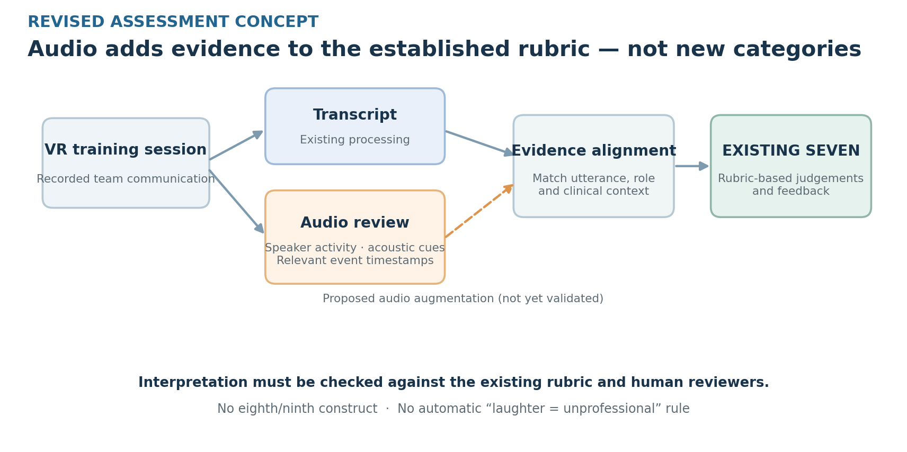

Introduction
Paediatric resuscitation as a team exercise
A paediatric resuscitation scenario requires several people to work on the same problem from different positions. The team leader directs the response, while trainees assigned to compressions, intravenous access and other tasks need to relay findings and acknowledge instructions while attending to their own work. An instruction can be clear to the person giving it and ambiguous to the person expected to act. When the team reviews the scenario afterwards, the relevant evidence may therefore extend across several turns: the initial request, who responded and what the response showed about how the instruction was understood.
VR-405 builds on a multi-user paediatric resuscitation simulation developed in the NUS Immersive Reality Lab with clinical collaborators at NUH. The simulation gives trainees an opportunity to practise their roles together and provides recordings that can be examined after the exercise. Previous trials supplied speech and assessment material for the project. A randomised pilot in paediatric VR provides a published example of studying facilitator-guided and self-guided debriefing in this training context. Its scope is separate from the assessment and feedback methods examined here. [15]
Debriefing makes these exchanges available for deliberate review. A facilitator can ask what each person understood at the time, return to a particular instruction and help the team work out how it would handle a similar exchange in a later scenario. Some of that work depends on the participants’ account of what they heard or intended, which a recording may not resolve. A record of the exchange can give the group a common point of reference while leaving room for participants to explain the circumstances.
What the previous research provides
The supplied research-team manuscript describes an assessment pipeline that starts with recorded speech. It produces timestamped, speaker-attributed transcripts and reconstructs exchanges so that related utterances can be assessed together. An AI-assisted rubric then records positive and negative observations in an evidence-linked worksheet. The seven categories, refined with subject-matter input, are Roles and Responsibilities, Closed Loop Communication, Clear Messages, Knowing One’s Limitations, Constructive Intervention, Summarisation and Re-evaluation, and Knowledge Sharing. The worksheet gives the team a record of what was assessed and a way to return to the evidence behind an observation. Project source [P1]
The research team also obtained consultant annotations as reference material. Its manuscript describes an initial comparison of automated worksheet review and facilitated debriefing with four teams per condition. The formats differed and the findings were descriptive, so the comparison leaves open which features of feedback matter for learning. The manuscript is an internal project source with unconfirmed publication status. The capstone takes the assessment and its evidence as the starting point for two separate investigations.
Consider a hypothetical example in which a team leader calls for equipment and a teammate repeats the request. A transcript can show the words of both turns and the sequence in which they occurred. A recording also contains the delivery of the instruction, including information about timing and what else could be heard. An assessment worksheet can point the reader to the exchange and record an observation about acknowledgement. If the observation is used in a debrief, its value then depends on what the team can learn from discussing the exchange. These are related questions about the same episode, with different evidence requirements.
Where the two contributions begin
Upstream research team · Recorded simulation → transcript and discourse analysis → AI assessment workbook
- Part A · Charlie Hee Ming Guan · Recorded audio → investigation of speech delivery
- Part B · Ang Kang Zhe · AI assessment workbook → learner feedback and instructor debrief support
Part A considers what a recording can tell us about delivery beyond the words captured in a transcript. The shared question is whether additional speech evidence can be interpreted reliably enough to be useful in this setting. Part B starts at a later point in the workflow. It takes the existing AI worksheet as its operational input and examines how the same assessment evidence could support reflection, corrective practice and facilitated debriefing. Consultant annotations are available as reference material for review. The two contributions use separate prototypes, and the feedback generator has no input from Part A predictions.
This boundary matters when interpreting either contribution. A new observation about delivery would need evidence that the signal was attributed to the right speaker and interpreted in context. A redesigned report would need evidence that the presentation preserved the meaning of the original assessment and helped its intended readers. The first question concerns what can reasonably be inferred from speech. The second concerns what trainees and educators can do with an assessment once it exists.
In both cases, the training context sets the standard for a useful result. A measurement has to be interpretable in relation to what trainees were trying to communicate. A report has to help a reader understand a real exchange and decide what to discuss or practise. The earlier simulation trials provide material to develop and check these methods. Claims about how trainees or educators use them require evidence from those groups.
Part A · Charlie Hee Ming Guan · Speech analysis
Acoustic evidence within the existing rubric
Research question: Can correctly speaker-attributed acoustic evidence improve identification or interpretation of behaviours within the existing seven-category communication rubric, compared with transcript-only review? This proposed comparison follows interim examiner feedback; improvement and supervisor approval of the narrowed scope remain unestablished.
The initial proposal added Professionalism and Confidence columns. The examiner questioned the justification for new constructs and their overlap with established categories. We have set that design aside. The seven categories remain Roles & Responsibilities, Closed-Loop Communication, Clear Messages, Knowing One’s Limitations, Constructive Intervention, Summarisation & Re-evaluation, and Knowledge Sharing. The reported historical reduction from 12 constructs to seven requires an original source; its selection procedure is not inferred here. [P1]
Informal listening highlighted laughter during a positively assessed summary and hesitant-sounding delivery during a recognised self-correction. These observations motivate checking whether audio supplies relevant evidence; neither establishes an incorrect rubric decision or its prevalence. A laugh can have different interpersonal meanings, while perceived certainty does not establish correctness or competence.
Choosing a defensible assessment target
Clear Messages is a candidate because delivery may affect reception, but its supplied criteria concern directedness, specificity and brevity. Intelligibility is not automatically a formal indicator. Clinicians must confirm whether a particular audio observation helps apply an existing criterion without changing its meaning. Perceived confidence cannot be mapped directly to Knowing One’s Limitations. Laughter detection can locate material for review but cannot assign professionalism.
| Approach | Potential contribution | Critical boundary |
|---|---|---|
| Transcript and context | Reference condition for interpreting established behaviours. | Preserve the original criterion and full exchange. |
| Confidence or laughter outputs | Identify delivery impressions or possible events for inspection. | Neither is a clinical construct score; contextual relevance is untested. |
| Intelligibility and timing | Investigate reception or delivery evidence potentially relevant to Clear Messages. | Recognition needs independent listener outcomes; timing alone is not intelligibility. |

Completed confidence and event prototypes
The reading-confidence pipeline processed 600 externally supplied, teacher-labelled children’s reading recordings using 88 eGeMAPSv02 functionals plus duration and three RMS descriptors. Five-fold recording-level evaluation gave macro-F1 0.7849 for Random Forest, 0.7104 for logistic regression and 0.1916 for the majority baseline. Imputation and logistic scaling were fitted within training folds. Speakers and texts may overlap across folds; authoritative speaker metadata remain unresolved. These are label-recovery results, not clinical or unseen-speaker validation. [3] [methods and aggregates]
The saved logistic model powers the private demonstration; the Forest result does not describe that demo. Applied to VR recordings, outputs were not dependable under spontaneous adult speech, silence, microphone bleed and missing linguistic context. The four added descriptors do not alone explain benchmark performance, but the fixed-fold ablations cannot remove speaker, text or recording confounds. Duration is not speaking rate and digital RMS is not calibrated vocal intensity. [ablations]
The pretrained YAMNet event pipeline processed eight original WAV channels and returned 19 candidate intervals. Channels overlap acoustically, so these are not 19 independent episodes. Informal listening found plausible examples; there is no exhaustive human reference or precision/recall estimate. Scores are uncalibrated event outputs. Possible missed events remain unadjudicated. [source audit]
Intelligibility groundwork and its limits
Edinburgh contains 125 recordings from one speaker: 25 matched sentences across five speaking conditions. Annotation-based spans increased relative to plain speech in all 25 computer-directed pairs (median +1.73 s) and all 25 non-native-listener-directed pairs (+0.80 s). Estimated pitch-range changes differed by condition. This establishes descriptive production contrasts, not improved listener recognition. Two infant-directed TextGrids under-cover their WAVs; measurement and pitch limitations remain documented. No independent recognition labels were available in this analysis. [10] [measurement audit]
Human-recognition precursor
R2SPIN supplied 6,400 keyword-recognition observations from 16 listeners and two recorded speakers. In eight held-out-list folds, context-only logistic accuracy/Brier was 69.14%/0.2060; adding published keyword glimpse proportion gave 72.88%/0.1805. This predictor describes acoustic audibility under masking, not a feature estimated from our trainee speech. Listeners, speakers and some keywords overlap across folds, so rows are not independent replication. Neither R2SPIN nor Edinburgh validates speaker-side prediction of clinical intelligibility or Clear Messages. [11] [fold results]
Proposed comparison and evidence gates
The next experiment should compare interpretations of the same episodes under transcript-only and transcript-plus-audio conditions against independent clinical annotations using the unchanged rubric. Prespecify one criterion, episode selection, exclusions and decision rules. Separate reference annotators from condition reviewers; counterbalance cases or use separate reviewer groups to reduce recall. Record disagreement before adjudication and retain uncertain cases rather than manufacture ground truth.
| Gate / timing | Required evidence | Decision |
|---|---|---|
| Criterion · weeks 1–2 | Clinical rubric owner confirms the exact criterion and audio relevance. | Preserve seven categories; stop if alignment requires redefining one. |
| Attribution · weeks 3–4 | Approved excerpts, utterance timing and verified speaker/role; cross-talk exclusions recorded. | Exclude or flag uncertain attribution. |
| Reference · weeks 5–6 | Independent clinical annotations, reasons and agreement. | Resolve protocol ambiguity before the comparison. |
| Incremental value · weeks 7–8 | Paired condition results, error analysis and reviewer usefulness. | Retain evidence only if reliability and criterion relevance are supported. |
Report category-level precision, recall and F1 against the clinical reference, inter-rater agreement, wrong-speaker errors and whether audio changes a defensible decision. Account for repeated episodes within teams and reviewers. A feasibility pilot must establish available independent cases, annotation burden and disagreement before sample-size or precision claims. If clinicians cannot participate, complete attribution and software audits while deferring rubric-improvement claims.
Interpretation and next decisions
The main limitation is construct validity: a measurable signal has no automatic clinical meaning. Cross-talk, uncertain speaker attribution, domain mismatch and informal listening constrain the prototypes. No improved seven-category accuracy, educational benefit or integrated audio-driven feedback has been demonstrated. Charlie owns criterion selection, audio curation and comparison planning with clinical reviewers; Kang Zhe’s feedback work remains separate. New annotation depends on confirmed access, consent and applicable approvals. The supervisor must approve the first criterion, annotation feasibility and a useful success measure. [decision log and research-rubric map]
Part B · Ang Kang Zhe
Educational feedback after simulation
The problem for learners and instructors
The existing worksheet answers an assessment question: what did the team do, and what evidence supports that observation? After a simulation, learners and instructors have further decisions to make. A trainee needs to understand which observation applies to their role, judge how their actions affected the exchange and decide what to practise. An instructor needs to select an episode the team can discuss, establish what happened and use the discussion to agree on a goal for the next exercise. The same observation can support both tasks, but each reader needs a different way into the evidence.
The current team-oriented assessment gives these readers observations and transcript evidence without explicitly organising them for reflection, corrective practice or debriefing. For example, a comment on an unclear instruction can help an instructor locate an episode, while still leaving the trainee to work out what made the instruction unclear and how to phrase it next time. A report that answers those questions too confidently could introduce a different problem by attributing a team observation to one person or by filling in details that the transcript cannot establish. The design task is to make the evidence easier to act on while keeping those uncertainties visible.
Part B therefore asks whether existing AI assessment evidence can be reorganised into learner and instructor reports that serve these two tasks. The current workbook motivates the question. Direct user research is still needed to establish where trainees and instructors need help, whether the redesigned material addresses those needs and whether any benefit persists beyond the immediate debrief.
Research basis and design choices
Hattie and Timperley distinguish feedback about the goal, current performance and what to do next. [18] For this project, that means explaining the expected communication behaviour, showing the observation that prompted the feedback and proposing an action the learner could rehearse. Nicol and Macfarlane-Dick give the learner a more active role through self-assessment and dialogue. [19] In practice, a question tied to a specific exchange can ask the learner to explain what happened and consider an alternative. Little et al.’s review of feedback literacy interventions supports studying how learners develop the capacity to use feedback, while differences in study design and outcome measures limit what can be inferred about any single intervention. [28]
Alnazawi and Almarhabi bring these ideas into the current healthcare simulation literature. Their 2026 scoping review of seven studies identified both structured reports for facilitators and reflective dialogue for learners. These uses give contemporary precedents for the two report designs. An instructor can work from organised evidence while retaining control of the debrief, and a learner can use a focused prompt to interpret an exchange before settling on a practice goal. Most of the reviewed studies examined feasibility, accuracy, usability or perceived value. Evidence of objective performance gains was limited. The review supports investigating these designs in simulation, while the two foundational papers explain the educational tasks the designs are intended to support. [32]
Duff et al. found limited robust evidence for choosing between specific simulation debriefing methods. [29] Kıyak et al. likewise found variable accuracy across studies of LLM feedback in undergraduate medicine, with no included study reporting behavioural or patient-level outcomes. [31] These findings make it important to measure whether readers understand the feedback and use it to prepare a sound plan before attempting to measure changes in later performance.
Keeping the same evidence across both reports is a deliberate design choice. In the learner report, a short explanation can lead into reflection and practice, with the original observation and source available for inspection. In the instructor report, several observations may provide a discussion focus, provided the selection is explicit and the instructor can review the other categories. The two audiences can then discuss the same episode without working from incompatible accounts. This also gives the evaluation a clearer comparison. The worksheet can serve as a baseline, while a generic summary could help test whether any benefit comes from the educational structure or from simply shortening the material. A report should make clear where it has selected evidence and where an educator’s judgement is needed.
The proposed learner report pairs a criterion with its supporting episode, asks a question about that episode and offers a feasible action for later practice. The instructor version uses the same evidence to identify a team issue worth discussing and proposes a group practice objective that the educator can adapt. For example, an approved redacted consultant specimen flags an oxygen request that could have been more specific. A learner prompt could ask how the team might identify the intended receiver and state the required parameters. An instructor could ask how the team understood the request and then use the answers to guide practice. Both suggestions require clinical review, and the example supports discussion at team level where individual responsibility is uncertain. Illustrative report concepts
What the first prototype established
Version 0.1 tests whether the basic report structure can be produced consistently from a workbook. The local Python generator reads annotations under recognised category headers and retains the source cell and nearby dialogue. It uses fixed templates to produce learner and instructor Markdown drafts. The learner version groups observations by competency. The instructor version presents selected observations and discussion prompts. The reported tests used deterministic local generation throughout.
The engineering evaluation covered 21 workbooks: one AI workbook and 20 consultant workbooks. It recovered 371 populated annotation cells, comprising 40 AI, 268 CT and 63 NN entries. Counts and extracted text agreed with an independent check for recognised layouts. Three learner and instructor report pairs were generated, and five synthetic characterisation checks were run. The count and extraction procedures share a first-row header assumption, and the totals represent populated cells. The separately inspected CT specimen reports 30 source annotations and displays 12 in each draft. That inspection was based on supplied outputs.
The strongest result is repeatable extraction and report generation for the tested layouts. Meaning and coverage remain less certain. All 40 AI polarity labels were unverified because the worksheet colours were unsupported. The display cap showed 14 of those records, and a synthetic example exposed an unrecognised header variant. Nearby rows may omit part of an exchange, and the source does not consistently establish who was responsible. These limits affect which observations can safely be presented as relevant to a particular learner.
The main educational weakness was visible in the wording of the drafts. The same general question and practice instruction recur across different episodes. In the oxygen example, a direction to rehearse the target behaviour leaves the learner to decide which part of the request to change. An episode-specific prompt would direct attention to the receiver and the parameters of the request while leaving the learner to explain the communication problem. For instructors, listing excerpts and counts similarly leaves the work of identifying a defensible discussion focus largely unresolved.
How the proposal will be evaluated
Evaluation begins with the relationship between the report and the source assessment. An independent reviewer should be able to recover the original observation, check the category and polarity, inspect enough dialogue to interpret it, and determine whether the report assigns it to an individual, a role or the team on sufficient evidence. Reviewers should also check for omitted material and judge the appropriateness of any suggested practice. Clarity and usefulness are separate questions from fidelity. [23]
The next study would compare the original worksheet with the proposed report using the same underlying observations. For learners, the outcomes would be comprehension and the specificity and appropriateness of their practice plans. For instructors, the outcomes would be the accuracy, evidence support and usefulness of their debrief plans, with preparation time as a secondary measure. A small pilot would establish whether the cases and scoring criteria work for both groups. Cases could be counterbalanced and plans rated without identifying the feedback format where feasible. Recruitment, sample size and analysis would depend on access, approvals and the pilot.
A later study could test communication in comparable simulations with independent assessment. It would need to account for different opportunities to demonstrate a behaviour, repeated participation and the fact that team members’ actions affect one another. A well-written practice plan is an immediate outcome. Whether the behaviour changes in a subsequent exercise is a separate research question.
Development priorities
The next iteration will prioritise coverage and source interpretation using additional AI worksheets. Work on recipient relevance will require fuller exchanges and evidence for role or individual attribution. Those improvements will make it possible to develop more specific practice suggestions and instructor prompts for clinical and user review. The iterations can overlap, with extraction tests, source review and small educational pilots answering different questions as the report develops. The current prototype supports this next stage by showing where the gap between a correctly populated report and useful learning guidance is greatest.
Outlook
The project’s next decisions depend on the quality of the evidence available to each contribution. For speech analysis, that means establishing whether observations about delivery can be interpreted in context. For educational feedback, it means checking the meaning, coverage and attribution of the worksheet evidence before asking whether the new reports help trainees and instructors. Both tracks ultimately depend on review by people familiar with the training setting. The indicative schedule presented at interim is subject to access to suitable records, clinical review and approvals for work with trainees and educators.